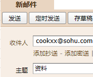

如何自助获取教程： 从 目录 找到要购买的资料，点击即可复制标题。把标题作为 主题发送到邮箱cookxx@sohu.com 示例如图：
每天9:00-17:00 软件会自动根据邮件发送教程。其他时间段发的邮件，等到9:00才开始依次处理。
每封邮件都是独立的一次指令，可以连续发邮，不用特意等待邮件回复。软件每隔10分钟按时间顺序批量处理邮件。
获取同名资料 不会重复扣费。
邮箱主题写错了资料名称，咋办？如果此主题 不存在对应的资料，就没影响。如果此主题 存在对应资料，余额会扣掉并发送资料，不可撤销。
有的视频原作者留有联系方式或水印，就别蠢到去加他们咨询。咱就几元钱买的录播课，就别妄想人家正课的课后服务，不如踏实地多看几个教程，多试验多总结，小钱办大事。
发出的邮件没收到回复可能原因：
1)我们仅一个收件邮箱cookxx@sohu.com检查下你是否正确发邮到我们的收件邮箱。
2)标题要完整，不要随便改，连标点符号都要一模一样。
3)检查下邮箱的垃圾箱，有时邮件被误判成垃圾广告。可以把我们的邮箱加入白名单
4)机器人每隔10分钟批量处理邮件，可能还没到10分钟，未进行处理。
5)非工作时间段发送的邮件，等到9:00时会继续处理邮件发送教程，不会漏掉邮件的。
6)vip每个自然周的免费额度用完了。
7)仍有疑问，Q我。
查看个人资料、余额、VIP、佣金、明细等所有信息。邮件主题写：资料
